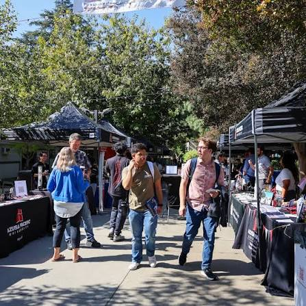

Community Work
Community development has not been a side note in my work—it has been a consistent thread across military service, veteran advocacy, neighborhood outreach, education, and current engagement in Cabo Verde.

Mindelo, Cabo Verde
Upon arriving in Mindelo, I made a deliberate decision to listen and learn before proposing solutions. Through conversations with students, local organizations, and community members, three practical areas of engagement emerged. This work is being carried out independently and on a volunteer basis.
Supporting the U.S. Embassy’s American Spaces program through weekly English conversation sessions and professional development discussions for university students, while contributing to early-stage programming concepts in coordination with the local program coordinator.
Providing English language coaching and communication support to staff at Simabo, while also using day-to-day discussions as a practical entry point into process improvement and problem-solving support.
Contributing to a community mapping and outreach effort to better understand local services and needs, connect organizations and providers, and make collaboration easier to navigate across the community.
Veteran & Community Outreach

Conceived, organized, and executed APU’s first Military & Veteran Resource Fair in partnership with 50+ service agencies, providing employment, education, housing, counseling, disability claims assistance, and $5,000 in clothing and food donations.
{kind=link}

Planned and executed APU’s first Veteran Awareness Week, a multi-day campus event focused on career transition, benefits, and personal finance education for military-affiliated students and the wider community.
{kind=link}
Co-organized the 3rd Annual Heroes in the Shadows Homeless Veteran Stand Down, helping connect 500+ disadvantaged veterans and their families with housing, medical, employment, and support resources.
Young Adult Community Outreach
Served as Operations Director for a downtown San Diego young adult outreach ministry, leading a team of five in weekly event operations and helping create an environment of belonging and connection through art, music, and community presence.
Supported multiple outreach efforts serving vulnerable populations across San Diego, including convalescent care, homeless street outreach, and engagement with women in prostitution—providing consistent presence, encouragement, and connection to supportive resources.